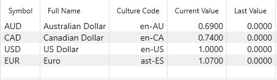
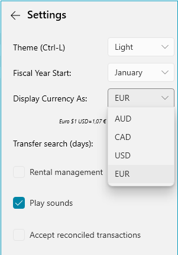
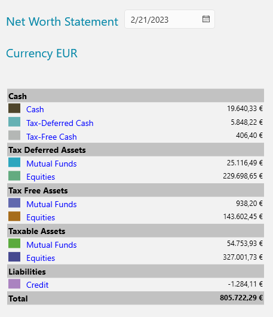

Currencies#
Notice when you Setup an Account you can specify a 3 letter
Currency code. You can provide details about this currency, including the current exchange rate, using
the View/Currencies view.

The Culture Code specified in column 3 is used to format the numbers with the right currency symbol.
If you have a fastFOREX.io API key you can enter it under Online/Online Services... and MyMoney will automaticaly download the latest currency data from fastFOREX.

These exchange rates then allow MyMoney to normalize all the dollar amounts on the
Reports to the default currency. The default currency is 'USD', but you can
specify a different default using the View/Options panel:

Here we've selected Euro, and now the reports will show totals in Euros:
